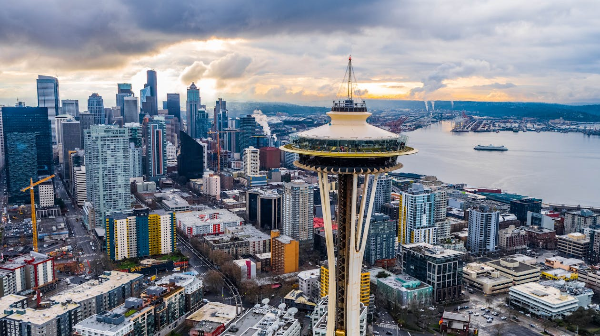
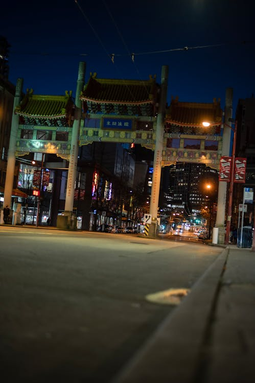

Welcome to the Rain City, Seattle, WA
A city surrounded by great food, lakes, and many evergreen forests. Seattle was named after Chief Si'ahl, who was the leader of the Duwamish and Suquamish tribes. Seattle is considered to be the largest city in the State of Washington but also the Pacific Northwest region of North America. Many people can see Seattle as a city known for it's wet and cold rainy weathers but it's also known for many big brand companies like Starbucks and Microsoft. There are many different things that Seattle has to offer. Many of our Museum and tourist spots like the Space Needle are the many reasons why people come to Seattle. It is also very known for having a very diverse demographic. So come to Seattle and explore the many things this city has to offer!
Data highlight
- 755,100
- 1851
- 83.9 square miles
- Amazon
- 4.4%
- $120,600 in 2023
- Population:
- Founded:
- Geographic size:
- Largest Employer:
- Unemployment Rate:
- Median Household Income:

Space Needle

Space Needle is a observation tower located in downtown Seattle. Many visitors would take an elevator up in order to use the observation deck.You also get a chance to check out the gift shop once you get down from the observation deck and there are also restaurants located at the top. The view on the very top is what many people enjoy coming to the Space Needle. As you get a great view of the City of Seattle and the Puget Sound. If you plan on going to the Space Needle, it is recommended to purchase your ticket in advance or show up early to avoid any of the long lines that happen.
To the Space Needle...
Pike Place

Pike's Place is a spot where many would enjoy. It serves as a location where many independent businesses can offer local or farm raised goods. You can catch many other things like fisherman tossing fish around and there are other spots around the area like the gum wall and the very first starbucks location.
To Pike Place Market...
Kerry Park

A very small park where you can get a great view on Seattle. The many views that you can catch are the Space Needle to the North, Elliot Bay to the west and Mount Rainier in the background. This is a great spot to view Seattle as a whole and many activities like watching the sun set or have a little picnic with the family.
To Kerry Park...
Chinatown-International District

A very diverse area where food scene is very incredible. You get different cruisine like Vietnamese, Chinese and other Asian crusine but also other crusine like Pizza or Steak. You can also visit Uwajimaya in the area, a family-owned Asian supermarket that offer many different goods.
Couple of Restaurants to visit when in the area:
Hong Kong Bistro
Baegopa
Dough zone
Chengdu Memory
Happy Lamb Hot Pot
To Chinatown-International District...
Resource:
Oriental construction with collonade on city road in Evening, by PNW Production, 2021. Source:Pexels.
Aerial View of City Buildings, by Josh Fields, 2020. Source:Pexels.
Modern Buildings in Seattle, by Bryce Carithers, 2021 Source:Pexels.
Low Light Photography of Concrete Structures, by Amanda Grove, 2017Source:Pexels.
Tower Under Blue Sky, by Jared VanderMeer, 2020 Source:Pexels.